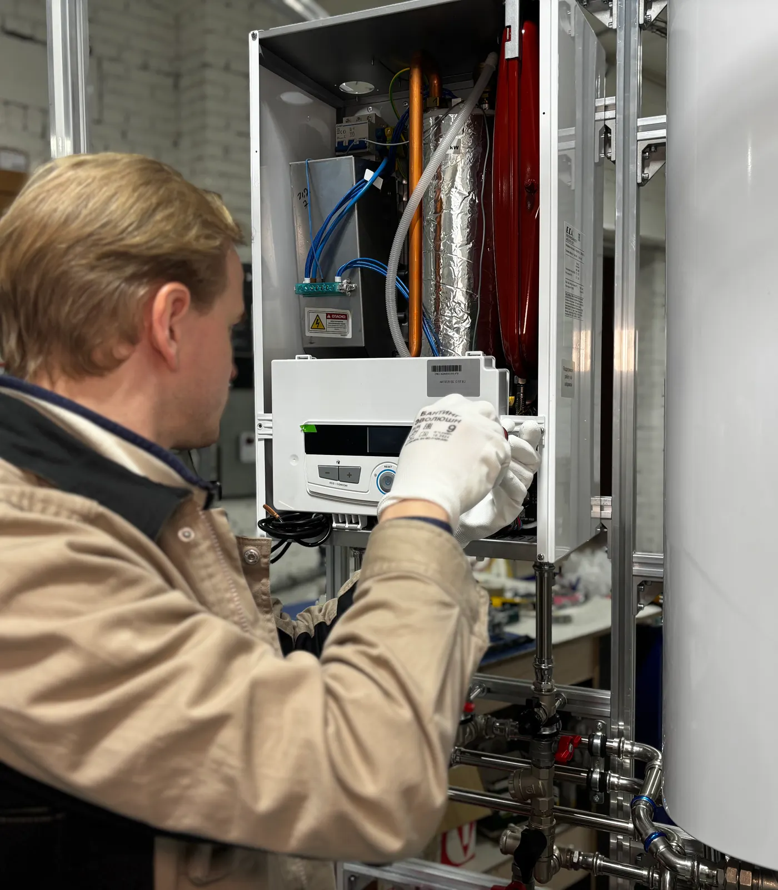
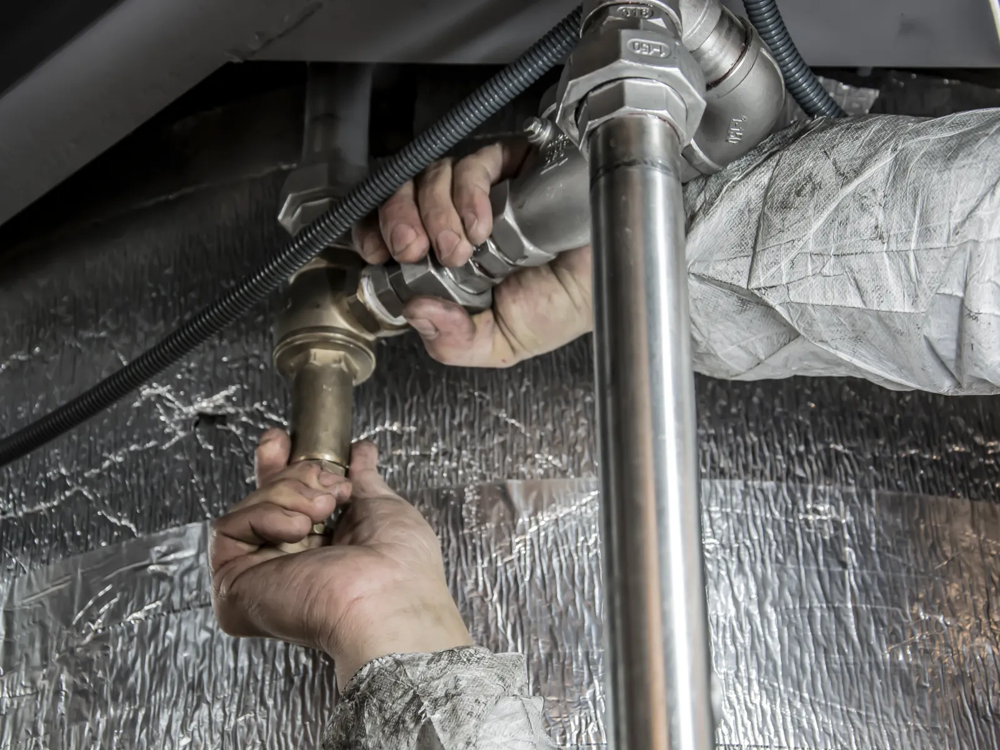
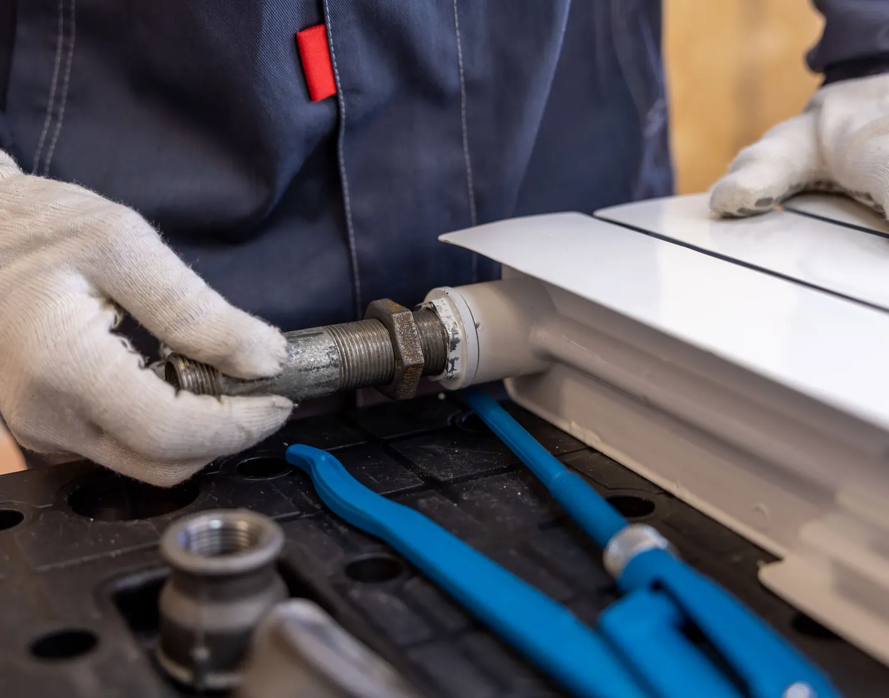
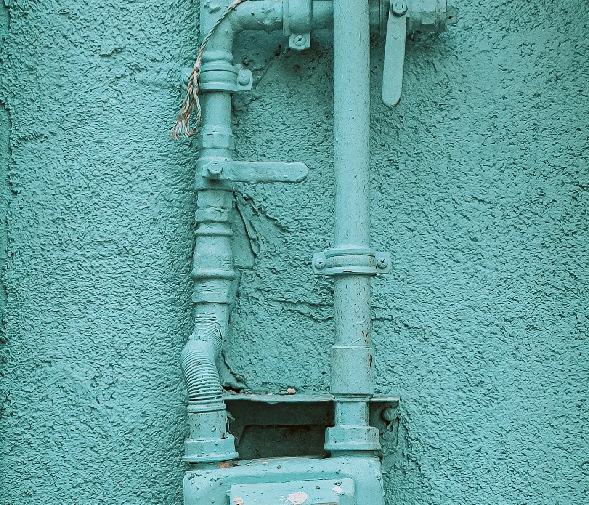
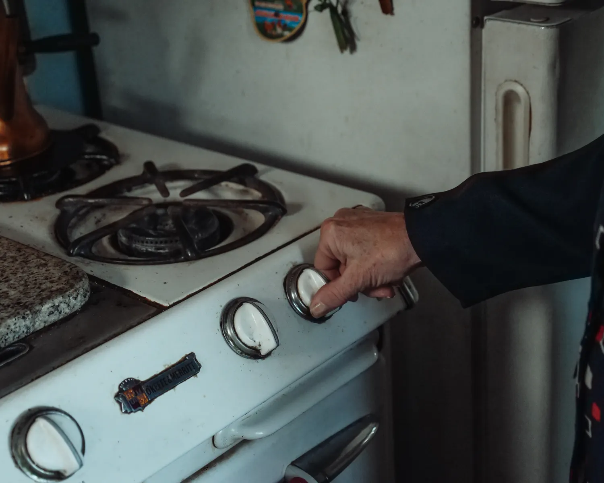
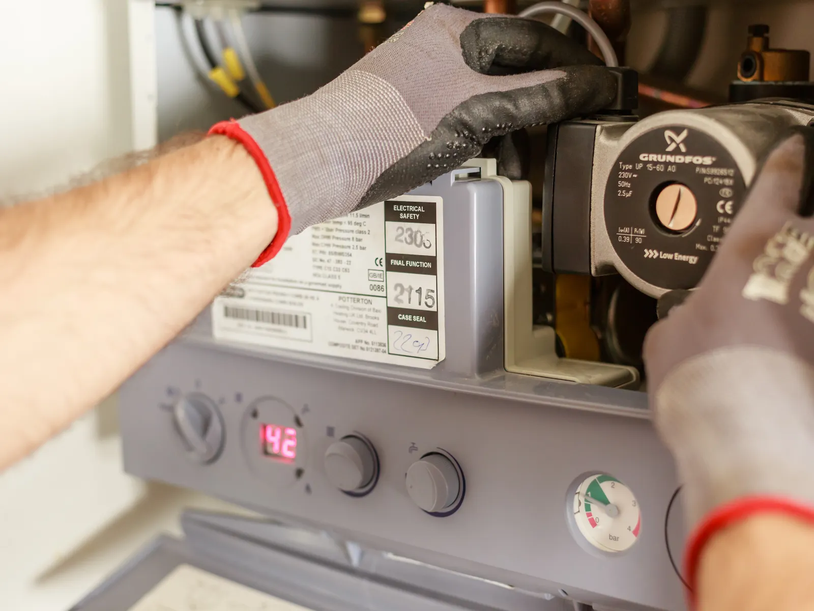
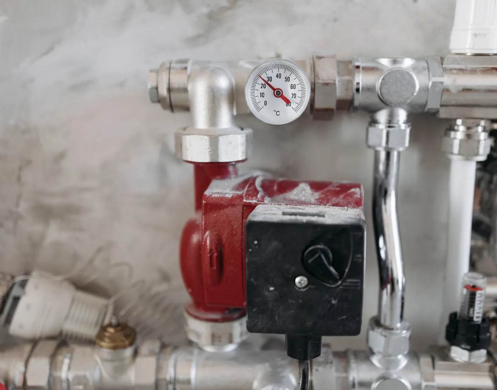

Instalaciones nuevas
Cañería interna, ventilaciones, conductos de evacuación y conexión de artefactos, ejecutada según la reglamentación vigente.
- Obra nueva y ampliaciones
- Cambio de recorrido de cañería
- Conexión de artefactos nuevos
Gasista matriculado · CABA
Cañerías, calefones, termotanques, estufas y habilitaciones. Trabajo con matrícula habilitante: la instalación queda firmada, probada y en condiciones de ser habilitada.

01 — Diagnóstico rápido
Mirá la hornalla o el piloto de tu artefacto y tocá el color que ves. Abajo aparece qué significa y qué corresponde hacer.
Combustión correcta
Una llama azul, corta y estable indica que el artefacto quema bien y que la mezcla de aire y gas está en su punto.
Lo que correspondeService preventivo anual: control de llama, ventilaciones y prueba de pérdidas.
Consultar por el serviceOrientativo. El diagnóstico real se hace en el domicilio, con el artefacto a la vista.
02 — Servicios
Cañería interna, ventilaciones, conductos de evacuación y conexión de artefactos, ejecutada según la reglamentación vigente.

Detección del punto exacto de pérdida y reparación. Si sentís olor a gas: cerrá la llave general, ventilá, no toques llaves de luz y llamá.
Instalación, reemplazo y service. Revisión de tiraje, ventilación reglamentaria y regulación de la llama del artefacto.
Estufas de tiro balanceado, calderas y radiadores: instalación, purgado, control de pérdidas y puesta a punto antes del frío.

Preparación del plano de la instalación, prueba de hermeticidad y presentación de la documentación ante la distribuidora.
La revisión anual antes del invierno: estado de llama, ventilaciones, conductos y control de pérdidas en toda la instalación.

03 — Por qué matriculado
Una instalación de gas sin firma no existe para nadie: ni para la distribuidora, ni para el seguro, ni para el que compra la casa después.
La instalación interna se presenta con plano y firma de un matriculado. Sin eso no hay habilitación posible.
La matrícula es un registro: el trabajo queda asociado a una persona identificable, no a un número de teléfono que después no atiende.
Toda cañería nueva o reparada se somete a prueba de hermeticidad con manómetro antes de tapar la pared.
04 — Cómo trabajo



Por WhatsApp, con una foto del artefacto o del sector. Con eso ya se entiende si es una revisión, una reparación o un trabajo de instalación.
Reviso el artefacto, la ventilación y el conducto de evacuación. Antes de tocar nada te digo qué encontré y qué hace falta.
Materiales aprobados para gas y recorrido de cañería definido con vos. Lo que se abre se deja cerrado y limpio.
Prueba de hermeticidad con manómetro, control de llama en cada artefacto y, si el trabajo lo requiere, la documentación para habilitar.
05 — Zona
Casas, departamentos, PH y consorcios. Si estás sobre el límite de la General Paz, escribime igual y lo vemos.
Consultar por mi barrio06 — Opiniones
Vino por el calefón que se apagaba y terminó encontrando una pérdida en la cañería de la cocina. Nos dejó el manómetro puesto hasta el otro día para probar que quedaba bien.
Necesitábamos la habilitación para escriturar y estábamos con el tiempo justo. Hizo el plano, la prueba y nos explicó cada paso del trámite.
Lo llamamos por el consorcio, por las ventilaciones de la sala de máquinas. Presupuestó lo que había que hacer, sin agregar cosas de más.
07 — Preguntas
Si la tuya no está acá, mandámela por WhatsApp: si se puede responder por mensaje, te la respondo por mensaje.
Porque las instalaciones internas de gas solo pueden ser ejecutadas y firmadas por un gasista con matrícula habilitante ante la distribuidora. Sin esa firma no se puede presentar el plano ni habilitar el servicio, y un trabajo hecho por alguien sin matrícula no queda registrado en ningún lado.
Que la combustión está incompleta. La llama de gas bien regulada es azul y pareja; cuando se pone amarilla o anaranjada el artefacto no está quemando bien y puede generar monóxido de carbono, que no se ve ni se huele. Conviene cerrar el artefacto, ventilar el ambiente y llamar a un matriculado antes de volver a usarlo.
Sí. Además de ejecutar la instalación, preparo el plano, hago la prueba de hermeticidad y presento la documentación para que la instalación quede habilitada a tu nombre.
Una vez al año, idealmente antes del invierno, que es cuando más se usan la estufa y el calefón. La revisión incluye estado de la llama, ventilaciones, conductos de evacuación y control de pérdidas en la instalación.
Sí, tanto en unidades particulares como en trabajos de consorcio: columnas de alimentación, medidores, ventilaciones de sala de máquinas y reparaciones en espacios comunes.
Por WhatsApp. Con una foto del artefacto o del sector a intervenir y la dirección aproximada ya se puede orientar el trabajo; para instalaciones nuevas o habilitaciones hace falta una visita para ver la cañería y las ventilaciones.
Contacto
Contame qué artefacto es, qué está pasando y en qué barrio estás. Si podés, mandá una foto: se resuelve más rápido.
11 3345-2186Si sentís olor a gas: cerrá la llave general, ventilá, no acciones llaves de luz y llamá desde afuera.
Se lo pasamos directo a quien la armó.